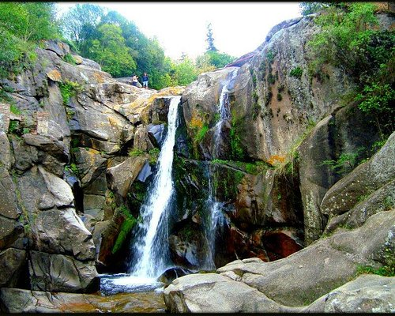
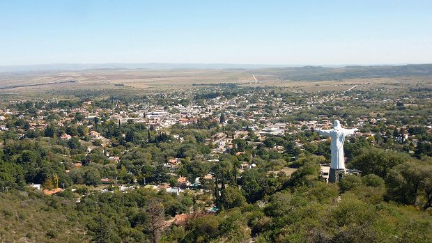

Lugares populares de Córdoba - Argentina
El Durazno

Distinguida por su río de aguas cristalinas y frías, El Durazno ofrece playas y ollas profundas para nadar, restaurantes y una pintoresca casa de té en medio de un paisaje para contemplar.
Icho Cruz

Con playas de arena, senderos serranos y un microclima especial para diversas actividades al aire libre, Icho Cruz es para disfrutar en familia o con amigos en pleno Valle de Punilla.
Los Terrones

Una obra maestra de la naturaleza. Un lugar con grandes y profundos “cañadones”, rocas anaranjadas y amarillas, que le dan un marco único a la paleta de colores que se registra visualmente.
Escapadas de fin de semana por Córdoba
Villa Carlos Paz

Villa Carlos Paz ofrece miradores para observar espectaculares vistas panorámicas, mucha vida nocturna, pequeñas playitas con hermosas aguas para disfrutar y un lago especialmente destinado para realizar deportes acuáticos o pasear en catamarán.
Tanti
es elegido por muchos turistas por sus reservas naturales y paseos en la montaña. Además, su arroyo de aguas cristalinas conforma 12 balnearios para el disfrute y descanso con familia y amigos. Algunas de las actividades que no se pueden perder en este pueblo son el recorrido por el bosque serrano hasta la cascada en la Reserva de los Chorrillos, caminar hasta Piedras Lisas y al Pozo del Indio, dos paseos ideales para encontrar ollas de agua y otras cascadas
La Cumbre
Su entorno natural mezclado con su gran propuesta gastronómica, oferta hotelera y variedad de actividades y paseos harán de su fin de semana en La Cumbre uno que valdrá la pena de verdad: visitar museos y capillas, hacer trekking, caminar por los hermosos paisajes serranos hasta Cruz Chica y Cruz Grande, cabalgatas, cicloturismo, paracaidismo, visitar viñedos y tomar el té a la tarde.